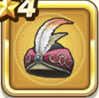

砂海のターバン
攻略班 5.5点 / 鳥系への耐性+3%
くわしい特徴
【レベル別習得スキル】 Lv1鳥系への耐性+3% Lv6守備力+4 Lv16【魔法使い】すばやさ+3 Lv20さいだいMP+3 【限界突破スキル】 1凸すばやさ+3 2凸守備力+3 3凸きようさ+3 4凸さいだいHP+3

攻略班 5.5点 / 鳥系への耐性+3%
【レベル別習得スキル】 Lv1鳥系への耐性+3% Lv6守備力+4 Lv16【魔法使い】すばやさ+3 Lv20さいだいMP+3 【限界突破スキル】 1凸すばやさ+3 2凸守備力+3 3凸きようさ+3 4凸さいだいHP+3